Dashboard tabs
Three of the four tabs, each shown in the same ERMA Home frame. The fourth, Activity Calendar, isn't in the archive.
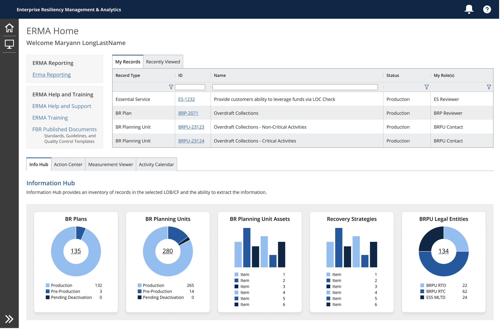
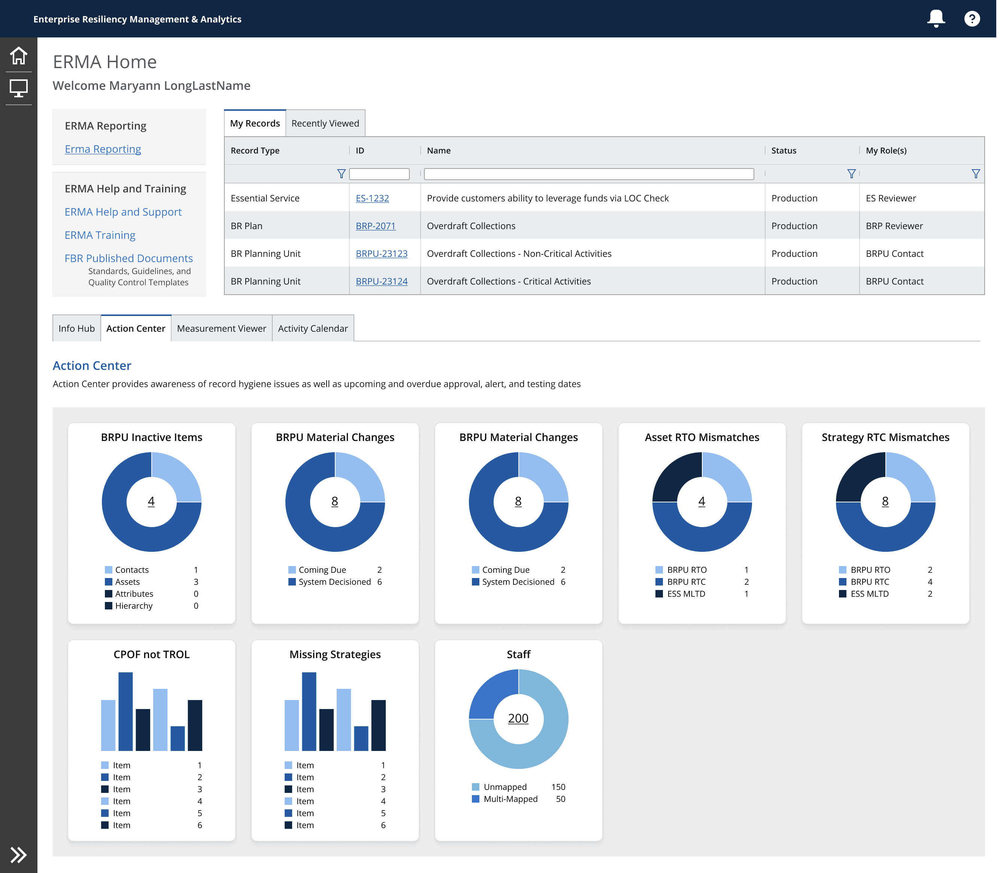
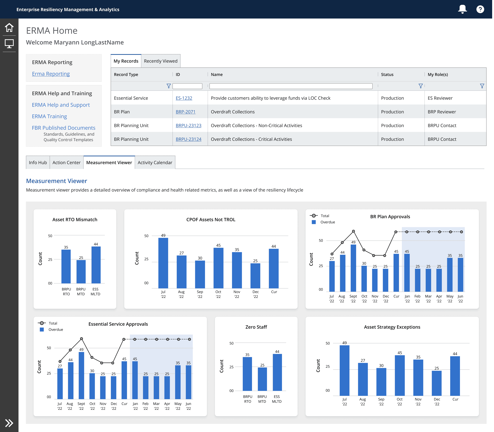
The problem
J.P. Morgan Chase was replacing disaster management and resiliency planning software that had been in use since the 1990s with ERMA: a centralized platform for developing, implementing, and monitoring the bank's resiliency and risk-management plans.
This wasn't reporting for its own sake. Disaster management and resiliency planning is how a bank the size of JPMC protects customers, employees, and assets when something goes wrong — and it's also how the bank demonstrates to regulators that it's meeting its obligations. If ERMA's reporting layer couldn't keep pace with what resiliency specialists and risk teams needed to see, that wasn't a UI inconvenience. It was a gap in the bank's ability to show its own compliance.
Risk and compliance teams used ERMA's reporting directly — it wasn't a downstream summary someone translated later. Whatever the reporting layer could or couldn't show was what those teams had to work with.
Reporting and analytics had every reason to become unmanageable trying to meet that bar.
JPMC had a tremendous amount of data, limited engineering capacity, and a large group of business analysts, resiliency specialists, and other stakeholders who all had opinions about what the product should report. Requests changed constantly. New metrics appeared. Stakeholders asked for different graph types and different ways of representing essentially the same kinds of information.
The engineers responsible for building it were already overstretched.
I had been brought in specifically to lead Reporting & Analytics because data design was an area I was known for. My job wasn't simply to turn that backlog of requests into dashboards. I needed to figure out how much of that complexity the product actually needed to inherit.
If every reporting request became a bespoke design and engineering problem, ERMA would become increasingly expensive to build every time it grew — and the reporting a regulated bank depended on would be at the mercy of whatever engineering capacity happened to be available that quarter.
The apparent variety wasn't actually that varied
Once I looked across the reporting requirements, a pattern became obvious.
Despite stakeholders asking for many different graphs, the overwhelming majority of the data could be represented through a much smaller visualization vocabulary — primarily pie charts and histograms. Even data being requested in other formats could generally be communicated effectively through those same structures.
That changed the problem.
I didn't need to design an interface capable of accommodating an unlimited number of visualization types. I needed to design a small number of patterns flexible enough to accommodate a very large number of metrics.
So I deliberately constrained the system.
Rather than giving every request its own graph type, component, and implementation, I established a limited visualization vocabulary and designed the reporting architecture around it.
That was the central product decision: give JPMC flexibility in what it could report without creating infinite flexibility in how the software had to work.
Making a small system do a lot of work
Constraining the visualization vocabulary only worked if the resulting system could still handle the breadth and density of JPMC's reporting needs.
I designed reusable widgets that shared a common structure while supporting different metrics, visualizations, legends, values, labels, and states. Instead of engineering treating every new report as a new interface, the same underlying components could be configured around different data.
The system supported four major reporting areas:
- Information Hub — an inventory and summary of resiliency records
- Action Center — work requiring attention
- Measurement Viewer — reporting and performance metrics
- Activity Calendar — time-based resiliency activity
Across those dashboards, the information could change substantially without requiring the interaction model to change with it.
Widget system
From template to production: the zones every widget reserves, the widgets built from them, and the card in two states.
▮ OverdueMeasurement Viewer Widget Title
Reserved spacingContent zone


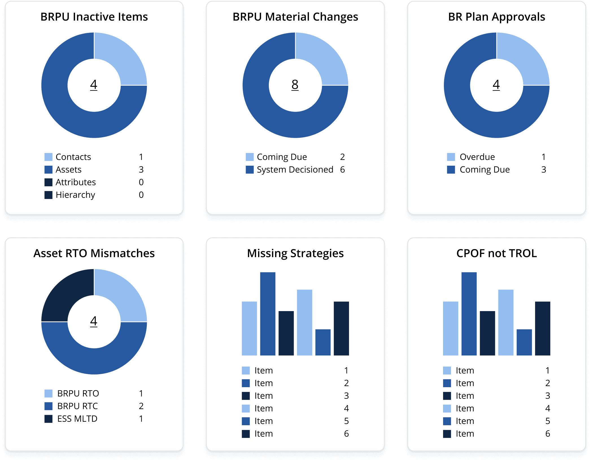
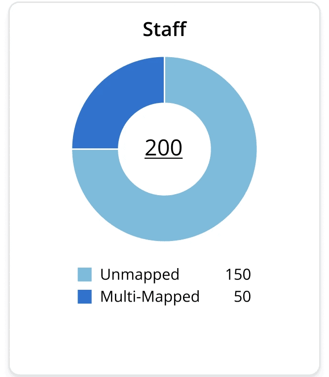
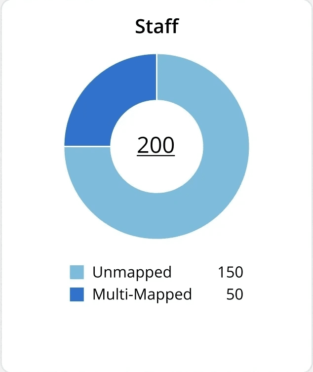
Designing the grammar, not just the screens
I defined the anatomy of the widgets so that variation happened inside intentional boundaries.
Titles, values, visualizations, legends, labels, supporting information, and actions each had a predictable place. Different configurations could accommodate meaningful differences in the data without requiring a new component every time someone requested a different metric.
This wasn't standardization for its own sake. Every additional visualization or layout pattern carried a real cost in design, development, testing, and maintenance. With limited engineering capacity and requirements that were going to continue changing, the architecture needed to absorb new requests rather than multiply with them.
The templates also gave us a way to respond to stakeholders without treating every preference as a new product requirement.
Instead of starting with, Which graph do you want?
I could start with, What are you actually trying to understand?
Then I could determine which existing pattern communicated it.
Constraint didn't mean removing the complexity
A small set of widgets was enough for monitoring. It wasn't enough for investigation.
Resiliency data could become extremely detailed, and users still needed to understand what sat behind a summary metric. I didn't want to solve the scalability problem by flattening the analytical experience.
So I designed the system in layers.
The dashboard handled the first question: What is happening?
Selecting a widget opened a reusable modal for the next questions: Why is it happening? What records are behind it? How can I narrow the data? What do I need to do with it next?
Within the modal, users could move from a larger visualization into the underlying records, refine the dataset with filters, work through detailed tabular information, and export data when they needed to continue analysis outside ERMA.
I standardized this layer too.
The visualization occupied a predictable region. Filters had a consistent home. Detailed records followed beneath the visualization. Actions remained in expected locations. The content could change without forcing users — or engineering — to relearn the structure.
Modal system
One layout — title, filters, graph, actions, table — reused for each data-refinement task.

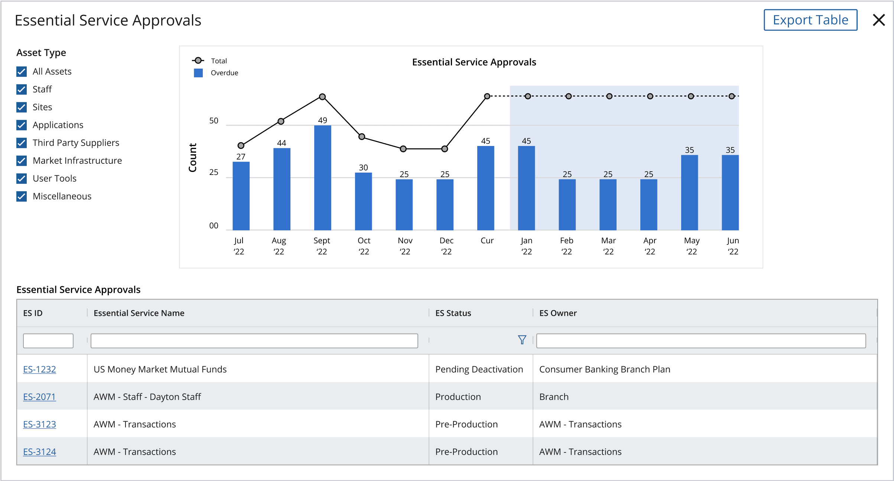
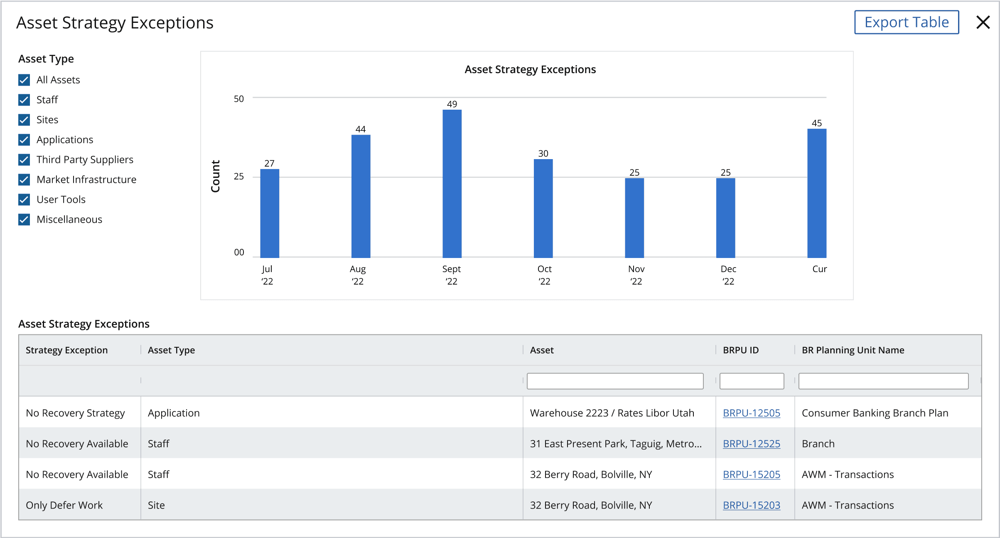
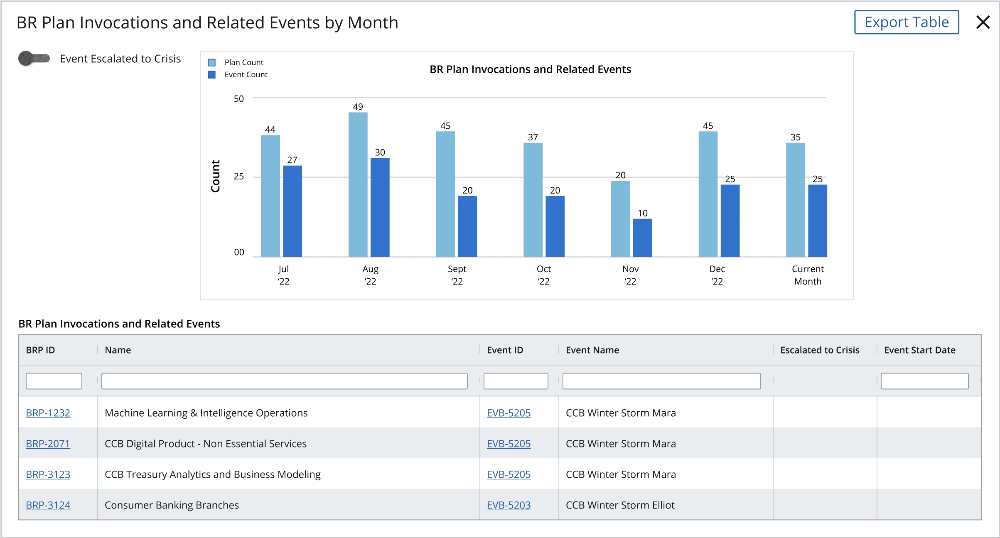
This was the balance I was trying to maintain throughout Reporting & Analytics:
Constrain the number of patterns without constraining what users could learn from the data.
From a metric to the data behind it
The widget and modal systems were designed as one interaction model, not two collections of components.
A user could scan a dashboard, identify a metric that needed attention, open it for deeper analysis, refine the information, inspect the individual records behind it, and export the results when necessary.
That meant ERMA could support both quick situational awareness and much deeper analytical work without putting all of that complexity on the dashboard at once.
Modal states
Mapped, Unmapped & Multi-Mapped Staff — the modal for the Staff data in Fig. 4, stepped through its toggle and month selection.
ADefault. Both toggles off; unmapped and multi-mapped staff as paired monthly bars.
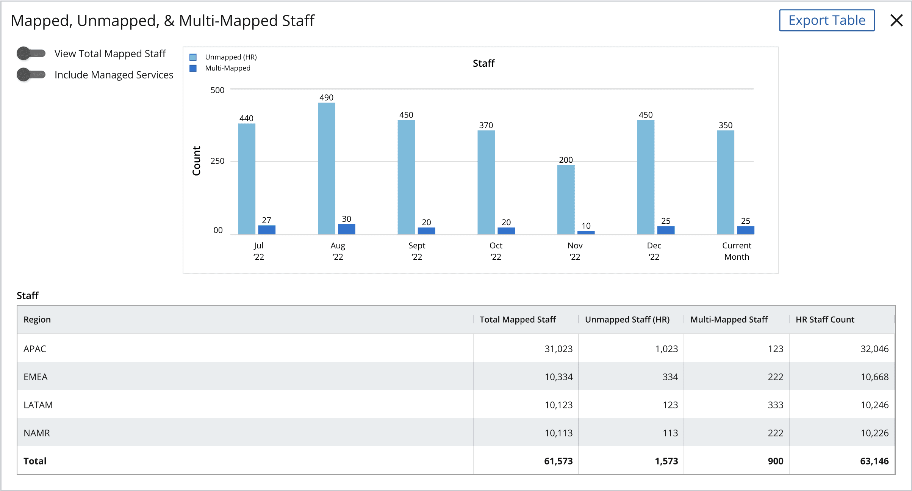
BMonth in focus. Jul ’22 stays at full strength; other months recede.
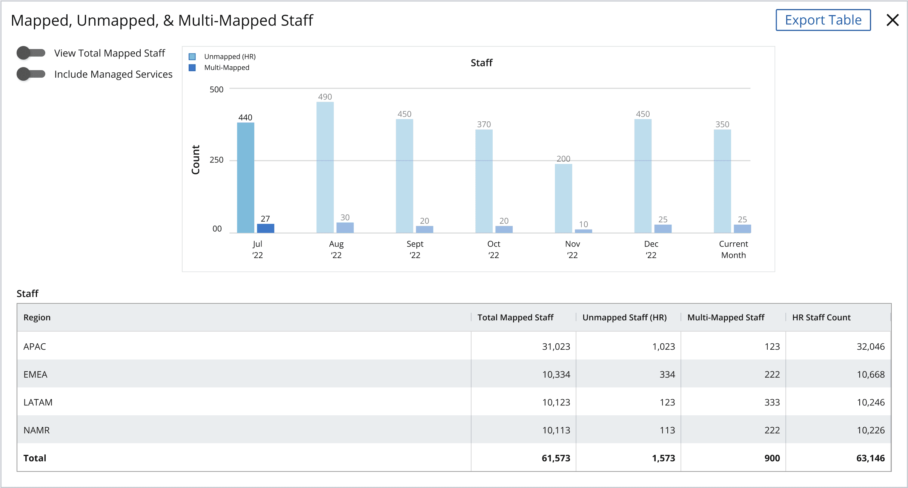
CView Total Mapped Staff on. Total plotted as a line; the bars drop back as context.
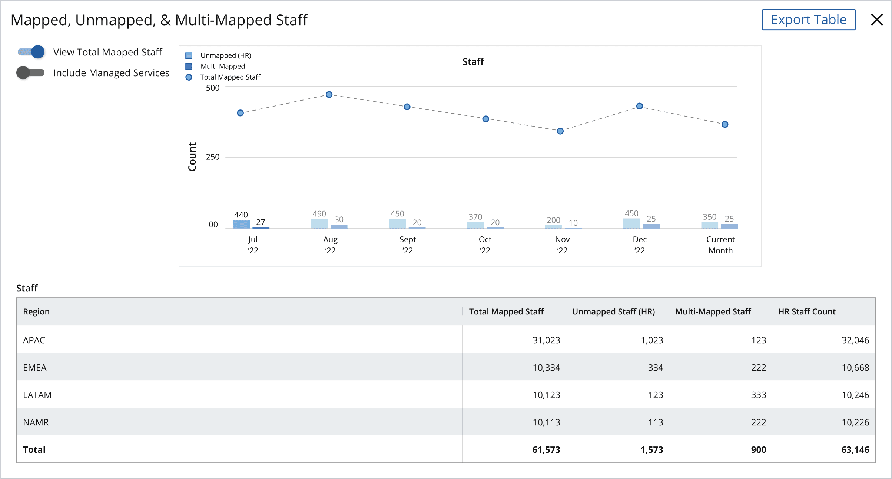
DTotal on, month in focus. Jul ’22 emphasised in both the line and the bars.
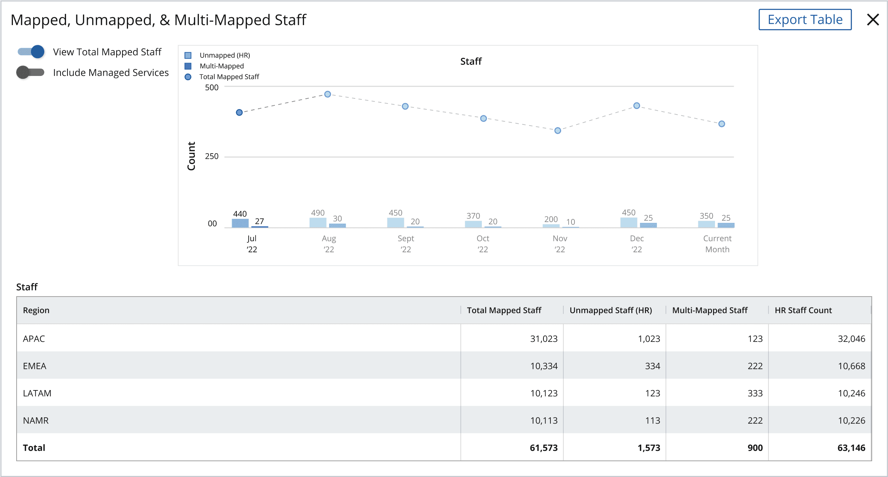
The result was an interface that could be information-dense without becoming structurally unpredictable. Users encountered the same basic grammar as they moved between different reporting needs, while the data — not a constantly changing UI — remained the variable.
Keeping the system intact in a high-pressure environment
The design problem wasn't happening in isolation.
ERMA had business analysts, resiliency specialists, product leadership, engineering, and other stakeholders deeply involved in the work. Requirements moved frequently, people had strong opinions about how information should be represented, and the project itself operated under significant pressure.
A reusable system only mattered if it survived that environment.
As Reporting & Analytics Lead, I had to understand the expertise behind people's requests without automatically translating every request into another feature or pattern. I worked across groups that didn't always agree with one another and became someone who could maintain productive relationships even with stakeholders other team members found difficult to work with.
That mattered to the product. Every request to make one dashboard behave differently could have weakened the architecture. Keeping the system coherent required both design judgment and the ability to explain why a constraint existed, understand what someone was actually trying to accomplish, and find a solution inside the system whenever possible.
The architecture gave us boundaries.
My job was to make those boundaries useful enough that the organization could work within them.
The system became the foundation
The constraint held.
Engineering reused the widget and modal templates, and they became the foundation for ERMA's dashboards as the platform continued to expand. New metrics did not automatically require new interface patterns. New reporting needs could be incorporated into an architecture the team already understood how to design, build, and use.
That mattered beyond the product itself. Risk and compliance teams were working directly from this reporting layer — a system that could absorb new disaster management and resiliency planning requirements without falling behind meant JPMC's ability to monitor and demonstrate its own compliance could keep pace with the bank's actual needs, not with however much engineering time happened to be available.
That was the outcome I had been designing toward from the beginning: ERMA could grow without its reporting interface — and the compliance work that depended on it — growing at the same rate as stakeholder requests.
The engagement grew too. My firm added two additional people to the contract, and the trust I built through ERMA led directly to my next J.P. Morgan assignment: the Asset Outage Modeling Tool.
“…I want to shout out Fiona for her work with us this quarter. She's stuck with us for a long duration, and she has helped some very strong personalities find their voice with design… and she delivered a great, high quality product with… care.”